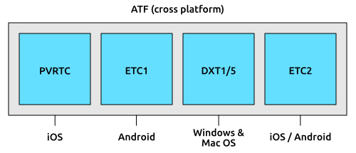
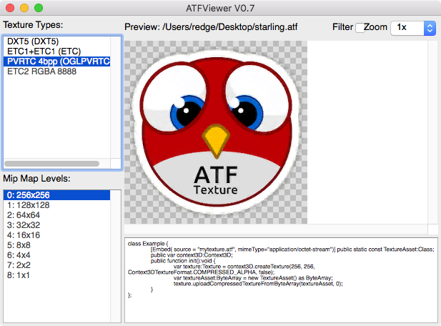

Memory footprint of a 512 × 512 RGBA texture:
512 × 512 pixels × 4 bytes = 1,048,576 bytes ≈ 1 MB
ATF Textures
In conventional OpenFL, most developers use the PNG format for their images, or JPG if they don’t need transparency. Those are very popular in Starling, too. However, Stage3D offers an alternative that has several unique advantages: the Adobe Texture Format (or ATF), which can store compressed textures.
-
Compressed textures require just a fraction of their conventional counterparts.
-
Decompression is done directly on the GPU.
-
Uploading to graphics memory is faster.
-
Uploading can be done asynchronously: you can load new textures without interrupting gameplay.
Graphics Memory
Before we go on, it might be interesting to know how much memory is required by a texture, anyway.
A PNG image stores 4 channels for every pixel: red, green, blue, and alpha, each with 8 bit (that makes 256 values per channel). It’s easy to calculate how much space a 512 × 512 pixel texture takes up:
When you’ve got a JPG image, it’s similar; you just spare the alpha channel.
Memory footprint of a 512 × 512 RGB texture:
512 × 512 pixels × 3 bytes = 786,432 bytes ≈ 768 kB
Quite a lot for such a small texture, right? Beware that the built-in file compression of PNG and JPG does not help: the image has to be decompressed before Stage3D can handle it. In other words: the file size does not matter; the memory consumption is always calculated with the above formula.
Nevertheless: if your textures easily fit into graphics memory that way — go ahead and use them! Those formats are very easy to work with and will be fine in many situations, especially if your application is targeting desktop hardware.
However, there might come a moment in the development phase where your memory consumption is higher than what is available on the device. This is the right time to look at the ATF format.
Compressed Textures
Above, we learned that the file size of a conventional texture has nothing to do with how much graphics memory it uses; a massively compressed JPG will take up just as much space as the same image in pure BMP format.
This is not true for compressed textures: they can be processed directly on the GPU. This means that, depending on the compression settings, you can load up to ten times as many textures. Quite impressive, right?
Unfortunately, each GPU vendor thought he could do better than the others, and so there are several different formats for compressed textures. In other words: depending on where your game is running, it will need a different kind of texture. How should you know beforehand which file to include?
This is where ATF comes to the rescue. It is a format that was created especially for Stage3D; actually, it is a container file that can include up to four different versions of a texture.
-
PVRTC (PowerVR Texture Compression) is used in PowerVR GPUs. It is supported by all generations of the iPhone, iPod Touch, and iPad.
-
DXT1/5 (S3 Texture Compression) was originally developed by S3 Graphics. It is now supported by both Nvidia and AMD GPUs, and is thus available on most desktop computers, as well as some Android phones.
-
ETC1 (Ericsson Texture Compression) is used on many mobile phones, most notably on Android.
-
ETC2 provides higher quality RGB and RGBA compression. It is supported by all Android and iOS devices that also support OpenGL ES 3.
I wrote before that ATF is a container format. That means that it can include any combination of the above formats.

Figure 1. An ATF file is actually a container for other formats.
When you include all formats (which is the default), the texture can be loaded on any Stage3D-supporting device, no matter if your application is running on iOS, Android, or on the Desktop. You don’t have to care about the internals!
However, if you know that your game will only be deployed to, say, iOS devices, you can omit all formats except PVRTC. Or if you’re only targeting high end mobile devices (with at least OpenGL ES 3), include only ETC2; that works on both Android and iOS. That way, you can optimize the download size of your game.
|
The difference between DXT1 and DXT5 is just that the latter supports an alpha channel. Don’t worry about this, though: the ATF tools will choose the right format automatically. ETC1 actually does not support an alpha channel, but Stage3D works around this by using two textures internally. Again, this happens completely behind the scenes. |
Creating an ATF texture
There is a set of command line tools to convert to and from ATF and to preview the generated files.
They are part of the Adobe AIR SDK (look for the atftools folder).
Probably the most important tool is png2atf.
Here is a basic usage example; it will compress the texture with the standard settings in all available formats.
png2atf -c -i texture.png -o texture.atf
If you tried that out right away, you probably received the following error message, though:
Dimensions not a power of 2!
That’s a limitation I have not mentioned yet: ATF textures are required to always have side-lengths that are powers of two. While this is a little annoying, it’s actually rarely a problem, since you will almost always use them for atlas textures.
| Most atlas generators can be configured so that they create power-of-two textures. |
When the call succeeds, you can review the output in the ATFViewer.

Figure 2. The ATFViewer tool.
In the list on the left, you can choose which internal format you want to view. Furthermore, you see that, per default, all mipmap variants have been created.
| We will discuss mipmaps in the Memory Management chapter. |
You will probably also notice that the image quality has suffered a bit from the compression. This is because all those compression formats are lossy: the smaller memory footprint comes at the prize of a reduced quality. How much the quality suffers is depending on the type of image: while organic, photo-like textures work well, comic-like images with hard edges can suffer quite heavily.
The tool provides a lot of different options, of course. E.g. you can let it package only the PVRTC format, perfect for iOS:
png2atf -c p -i texture.png -o texture.atf
Or you can tell it to omit mipmaps in order to save memory:
png2atf -c -n 0,0 -i texture.png -o texture.atf
Another useful utility is called atfinfo.
It displays details about the data that’s stored in a specific ATF file, like the included texture formats, the number of mipmaps, etc.
> atfinfo -i texture.atf File Name : texture.atf ATF Version : 2 ATF File Type : RAW Compressed With Alpha (DXT5+ETC1/ETC1+PVRTV4bpp) Size : 256x256 Cube Map : no Empty Mipmaps : no Actual Mipmaps : 1 Embedded Levels : X........ (256x256) AS3 Texture Class : Texture (flash.display3D.Texture) AS3 Texture Format : Context3DTextureFormat.COMPRESSED_ALPHA
Using ATF Textures
Using a compressed texture in Starling is just as simple as any other texture.
Pass the byte array with the file contents to the factory method Texture.fromAtfData().
var atfData:ByteArray = getATFBytes(); (1)
var texture:Texture = Texture.fromATFData(atfData); (2)
var image:Image = new Image(texture); (3)| 1 | Get the raw data e.g. from a file. |
| 2 | Create the ATF texture. |
| 3 | Use it like any other texture. |
That’s it! This texture can be used like any other texture in Starling. It’s also a perfectly suitable candidate for your atlas texture.
However, the code above will upload the texture synchronously, i.e. Code execution will pause until that’s done. To load the texture asynchronously instead, pass a callback to the method:
Texture.fromATFData(atfData, 1, true,
function(texture:Texture):Void
{
var image:Image = new Image(texture);
});Parameters two and three control the scale factor and if mipmaps should be used, respectively. The fourth one, if passed a callback, will trigger asynchronous loading: Starling will be able to continue rendering undisturbed while that happens. As soon as the callback has been executed (but not any sooner!), the texture will be usable.
Of course, you can also include the ATF file as an asset in your Lime project.xml configuration file.
<assets path="assets/texture.atf"/>Use the Assets.getBytes() method to get the bytes.
var atfData:ByteArray = Assets.getBytes("assets/texture.atf");
var texture:Texture = Texture.fromATFData(atfData);Other Resources
You can find out more about this topic in the following sources: